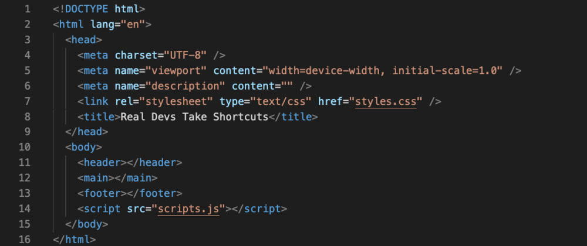

Quem sou eu 💻
Sou graduando no curso de Análise e Desenvolvimento de Sistemas pelo SENAC e durante o ano de 2021 iniciei na ETEC o curso Técnico em Informática para Internet. Anteriormente me graduei em Lic. em Ciências da Natureza pela USP (2016) e em 2019 me titulei mestre em Ciências pelo Museu de Zoologia da USP.No ano de 2020 iniciei a migração de carreira para a área de tecnologia. Possuo conhecimento nas seguintes tecnologias: - JAVA (sintaxe) - JavaScript (sintaxe) - PHP (sintaxe) - HTML5 (sintaxe) - CSS3 (sintaxe) - Lógica de programação - Redes de comunicação de dados - Banco de dados Temas de interesse: - Cloud computing - Machine Learning - Análise de dados - Ciência de dados - Linguagem de programação Python - Big Data - Banco de dados relacional e não relacional - Dados estruturados e não estruturados - Bioinformática Ficarei muito feliz em responder ao seu contato.